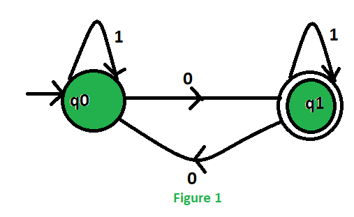
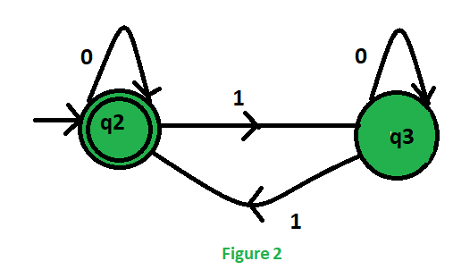

DFA machines accepting odd number of 0’s or/and even number of 1’s
Prerequisite – Designing finite automata
Problem – Construct a DFA machine over input alphabet \sum_= {0, 1}, that accepts:
- Odd number of 0’s or even number of 1’s
- Odd number of 0’s and even number of 1’s
- Either odd number of 0’s or even number of 1’s but not the both together
Solution – Let first design two separate machines for the two conditions:
- Accepting only odd number of 0’s
- Accepting only even number of 1’s
Then, merge these two and find the required final states.


To merge these two machines, we will take the Cartesian product of the states of these two machines:
.png)
Initial state of these DFA will be the state which contains the initial states of those two separate machines. As, q0 and q2 are the initial states thus, q0q2 is the initial state of the final DFA.
Now start designing all the DFAs one by one:
- Odd number of 0’s or even number of 1’s:
This machine accept that languages which contains either odd no. of 0’s or even no. of 1’s. As we know that q1 indicates odd no. of 0’s and q2 indicates even no. of 1’s. So, the final states of the required DFA will contain either q1 or q2.
.’. Final states = {(q0q2), (q1q2), (q1q3)}
This is our required DFA which accept the languages containing odd no. and 0’s or even no. of 1’s.
- Odd number of 0’s and even number of 1’s:
This machine accept that languages which contains odd no. of 0’s and even no. of 1’s. As we know that q1 indicates odd no. of 0’s and q2 indicates even no. of 1’s. So, the final states of the required DFA will contain both q1 and q2.
.’. Final state = {(q1q2)}
This is our required DFA which accept the languages containing odd no. and 0’s or even no. of 1’s.
- Either odd number of 0’s or even number of 1’s but not the both together:
This machine accept that languages which contains either odd no. of 0’s or even no. of 1’s but not that languages which contains both odd no. of 0’s and even no. of 1’s. As we know that q1 indicates odd no. of 0’s and q2 indicates even no. of 1’s. So, the final states of the required DFA will contain exactly one among q1 and q2.
.’. Final states = {(q0q2), (q1q3)}
This is our required DFA which accept the languages containing odd no. of 0’s or even no. of 1’s but not the both together.